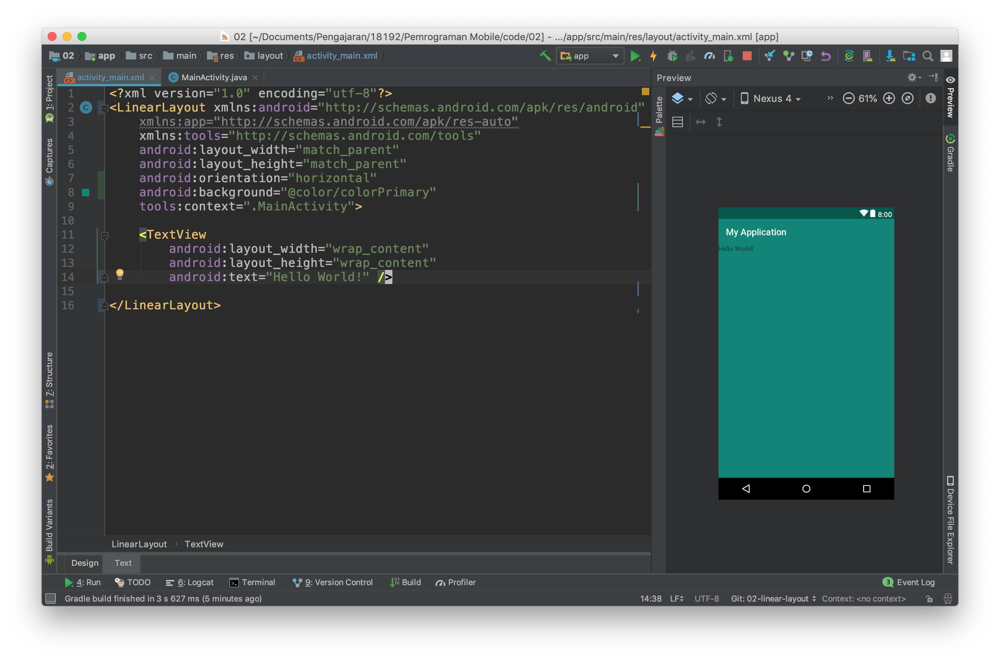
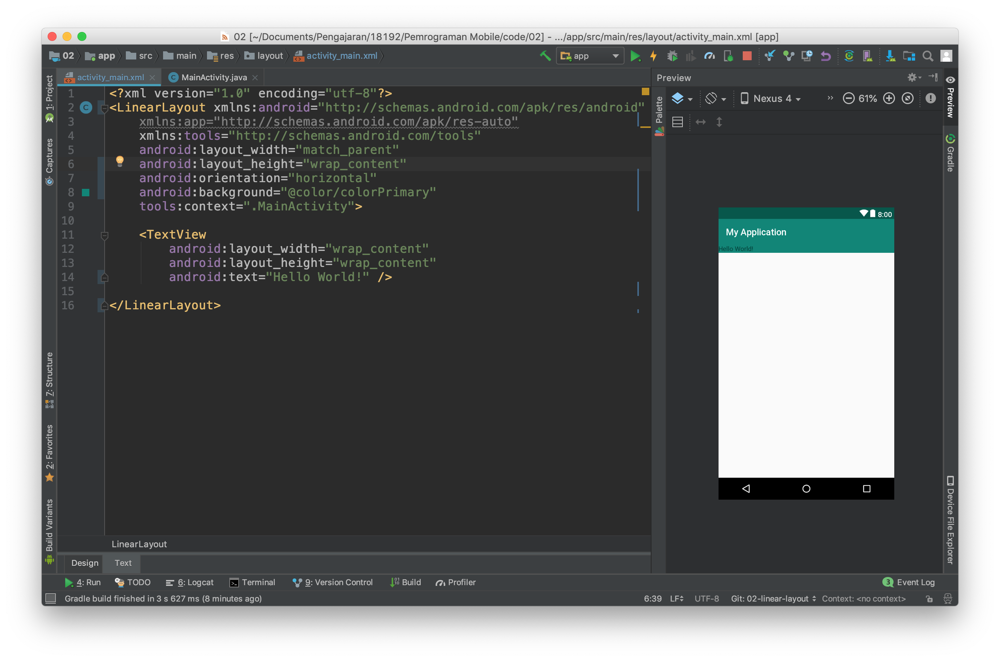
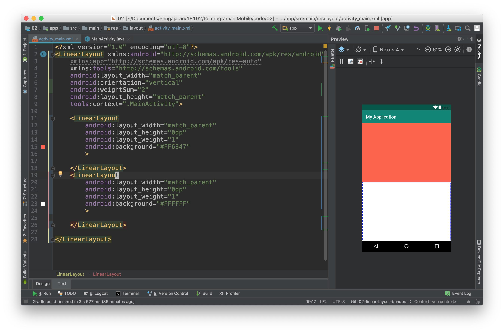

Membuat aplikasi dengan linear layout
- Buatlah kembali sebuah project baru dengan konfigurasi yang disesuaikan dengan kebutuhan anda seperti pada langkah praktikum sebelumnya.
Bukalah file
activity_main.xmlkemudian buka dengan menggunakan design mode.
Kemudian lakukan konversi view dari constraint layout ke lineear layout.


Kemudian gantilah design mode ke text mode.

Tambahkan properties
android:orientation="vertical"pada tagLinearLayout

Anda baru saja menambahkan atrribut baru pada tag xml, ada banyak properties lain yang perlu anda ketahui silahkan melakukan explorasi untuk properties atribut lain.
- Selanjutnya tambahkan properties background pada linear layout seperti pada gambar dibawah ini sehingga layout anda berubah background nya menjadi hijau.

- Kemudian ubahlah nilai dari properties
layout_heightmenjadi wrap_content

- Lakukanlah kompilasi kemudian simpulkan apakah perbedaan antara
wrap_contentdanmatch_parent
Selain properties diatas linear layout mempunyai properties khusus yang hanya ada pada tipe layout ini, yaitu weigth_sum dan layout_weight
- weight_sum adalah bobot yang diberikan kepada LinearLayout bobot ini nantinya dapat digunakan untuk membagi ukuran yang dapat dimiliki oleh child dari LinearLayout.
- layout_weight adalah bobot yang diberikan kepada child dari LinearLayout untuk menentukan ukuran dari child ini pada layar.
Untuk memahami penggunaannya lakukan langkah percobaaan berikut ini :
- Buka kembali project sebelumnya, kemudian kembalikan
layout_heightkematch_parent, juga hapus properties background seperti pada gambar dibawah ini :
- Hapuslah tag xml TextView kemudian isilah LinearLayout dengan dua buah child lain yang juga sebuah LinearLayout hasilnya seperti pada gambar dibawah ini.

- Jika anda lihat belum terjadi perubahan apapun pada layout, untuk itu lanjutkan dengan menambahkan properties background, weight_sum dan layout_weight seperti pada gambar dibawah ini.

kita dapat menggunakan LinearLayout sebagai child dari LinearLayout atau layout lain proses ini dinamakan nested layout
- Berdasarkan percobaan diatas lakukan lah perubahan perubahan sebagai berikut kemudian ambil lah kesimpulan dari percobaan ini.
- ubah orientasi menjadi horizontal
- ubah weight sum menjadi angka integer yang lain
- ubah layout_weight dari salah satu LinearLayout